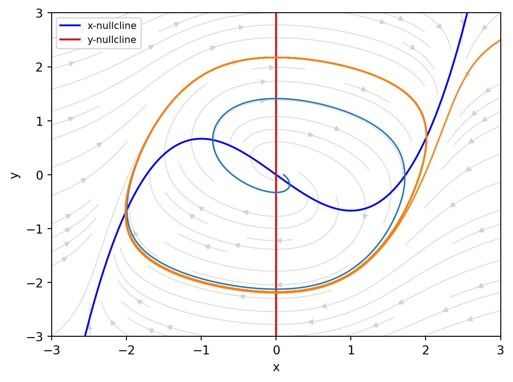

The Phase Plane
Module 1: Low-Dimensional Dynamics
A planar system
\[ \dot x = f(x, y), \qquad \dot y = g(x, y) \tag{1}\]
defines a vector field on the \((x, y)\) plane. Each point is a state, and trajectories follow the arrows. You can often understand the whole dynamics from a few geometric objects: nullclines, fixed points and closed orbits (Strogatz 2024, chap. 6 and 7).
Nullclines
The \(x\)-nullcline is the curve \(f(x, y) = 0\), where the flow is vertical. The \(y\)-nullcline is \(g(x, y) = 0\), where the flow is horizontal. The nullclines divide the plane into regions in which the signs of \(\dot x\) and \(\dot y\) are fixed, so you can sketch the direction of the flow in each region (Strogatz 2024, sec. 6.1).
Fixed points and the Jacobian
Fixed points are the intersections of the two nullclines. To find their type, linearize: with \(\mathbf u = (x - x^*, y - y^*)\), \(\dot{\mathbf u} \approx J\mathbf u\) with the Jacobian
\[ J = \begin{pmatrix} \partial f/\partial x & \partial f/\partial y \\ \partial g/\partial x & \partial g/\partial y \end{pmatrix}_{(x^*, y^*)} . \]
Then classify \(J\) by its trace and determinant as in Linear Systems in the Plane. If no eigenvalue has zero real part (a hyperbolic fixed point), the linearization predicts the local phase portrait correctly (Strogatz 2024, sec. 6.3).
Limit cycles
A limit cycle is an isolated closed trajectory. Nearby trajectories spiral towards it (stable limit cycle) or away from it (unstable). A stable limit cycle is a self-sustained oscillation: its amplitude and period are set by the system, not by the initial condition, and the system returns to it after a small perturbation (Strogatz 2024, chap. 7). Linear systems cannot have limit cycles: their closed orbits, when they exist, come in continuous families.
Explore the Van der Pol phase plane
- Click once close to the origin and once far from it. Both trajectories approach the same closed curve. Is its amplitude set by the initial condition?
- Read the type of the fixed point at the origin in the readout. Check it by hand: here \(\operatorname{tr} J = \mu\) and \(\det J = 1\).
- Increase \(\mu\) slowly. At which value does the origin change from an unstable spiral to an unstable node? Compare with \(\operatorname{tr}^2 J = 4 \det J\).
- Set \(\mu = 5\). Where does the trajectory move slowly and where does it jump? Look at the time series on the right: this is a relaxation oscillation.
- Set \(\mu = 0.1\). Why does it take so long to reach the cycle, and why is the cycle almost a circle?
The Poincaré-Bendixson theorem
In the plane, the long-run behaviour of a bounded trajectory is limited.
NoteTheorem (Poincaré-Bendixson)
Let \(R\) be a closed, bounded region of the plane, and let the vector field be continuously differentiable on an open set containing \(R\). If \(R\) contains no fixed points and there is a trajectory that starts in \(R\) and stays in \(R\) for all future time, then that trajectory is a closed orbit or spirals towards a closed orbit as \(t \to \infty\) (Strogatz 2024, sec. 7.3).
In practice you look for a trapping region: a region on whose boundary the vector field points inwards. If you remove a small disc around an unstable fixed point, the remaining annulus contains no fixed point, and the theorem guarantees a closed orbit. A consequence is that chaos is impossible in autonomous planar systems; it requires at least three dimensions, as in the Lorenz system (Strogatz 2024, sec. 7.3).
NoteExercise
For the Van der Pol system in the form \(\dot x = \mu(y - x^3/3 + x)\), \(\dot y = -x/\mu\), find the fixed point and its type for \(\mu = 1\).
TipSolution
The nullclines \(y = x^3/3 - x\) and \(x = 0\) meet only at the origin. The Jacobian there is \(\begin{pmatrix} \mu & \mu \\ -1/\mu & 0\end{pmatrix}\), with \(\tau = \mu = 1\) and \(\Delta = 1\). Since \(\tau^2 - 4\Delta = -3 < 0\) and \(\tau > 0\), the origin is an unstable spiral. Trajectories leave it and approach the limit cycle in Figure 1.
References
Strogatz, Steven H. 2024. Nonlinear Dynamics and Chaos: With Applications to Physics, Biology, Chemistry, and Engineering. Chapman; Hall/CRC.